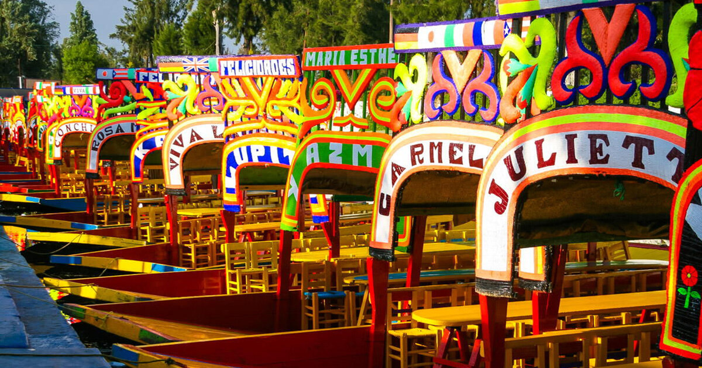

Xochimilco

Xochimilco, que en náhuatl significa “Campo de Flores”, se distingue por una serie de canales pluviales que existen desde la época prehispánica, cuando el Valle de México estaba conformado por lagos y lagunas casi en su totalidad.
Este poblado de espíritu lacustre ubicado al sur de la Ciudad de México, es famoso por sus chinampas y los paseos en trajinera a lo largo de sus canales, que evocan tiempos ancestrales donde la Gran Tenochtitlán era una ciudad que
se alzaba entre sus aguas. Xochimilco es quizás el último eslabón vivo de la civilización Azteca, un encuentro donde pasado y presente convergen para demostrar que la historia se puede seguir escribiendo, sin derribar lo legítimo e
integrando lo nuevo.
El ajolote

El axolote mexicano o ajolote, Ambystoma mexicanum, es una salamandra con la característica poco habitual de conservar sus rasgos larvales en su vida adulta. Esta condición, que se conoce como neotenia, significa que conserva su aleta
dorsal de renacuajo -que recorre casi la totalidad de su cuerpo- y sus branquias externas, que sobresalen de la parte trasera de su ancha cabeza en forma de plumas.
Este singular anfibio se encuentra en peligro crítico de extinción según la lista roja de la Unión Internacional por la Conservación de la Naturaleza, debido a la pérdida de hábitat, la introducción de especies invasoras en su hábitat,
la sobreexplotación, la contaminación y su consumo como alimento. El axolote se encuentra únicamente en el complejo lacustre de Xochimilco (pronunciado Sochimilco), cercano a la ciudad de México, y difiere de la mayoría de las salamandras
en que vive permanentemente en el agua. En casos extremadamente raros, el axolote madura y sale del agua, pero en la mayoría de los casos prefieren permanecer en el fondo de los lagos y canales de Xochimilco.
¿Cómo llego a Xochimilco?
El barrio de Xochimilco se encuentra a 43 kilómetros del Centro Histórico de Ciudad de México, es posible llegar a él en automóvil particular o transporte público. Si estás listo para lanzarte a la aventura en trajinera te recomendamos visitar
este destino entre los meses de febrero a noviembre para evitar días con lluvia.
Enfermedad coronavirus